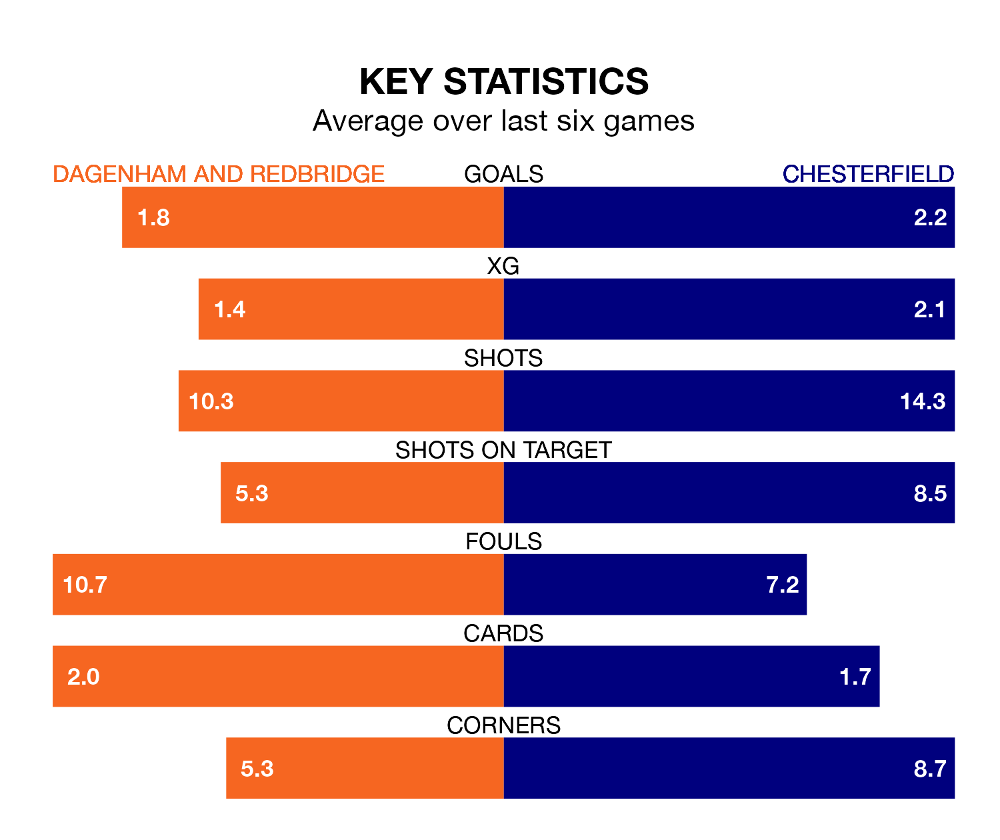

Chesterfield are strong favourites to take all three points despite Dagenham and Redbridge's home advantage in Saturday's match at the Chigwell Construction Stadium.
*Betting Company* are offering odds of 1.56 on Chesterfield sealing the win, with the visitors sitting first in National League table.
Dagenham & Redbridge, who are 16th in the league and 32 points behind the Spireites, are priced at 5.39 to win. A draw is set at 4.32.
With 61 goals in 25 games so far this season, Chesterfield are the league's highest scorers with 2.4 goals per game. And they are conceding fewer than average, letting in 33 goals at a rate of 1.3 per game.
Dagenham & Redbridge, meanwhile, are below average scorers, with 1.3 goals per game, compared to a league average of 1.5. They have conceded 1.4 goals per game.
The home team are in mixed form in National League, with two wins and two draws from their last six games.
With five wins and one loss over that period, the Spireites's form is much better – they have taken 15 points from 18, compared to Dagenham & Redbridge's eight.
In Will Grigg, the visitors have one of the league's most on-form strikers so far this season. He has notched 13 goals in 24 appearances, to sit fourth in the scoring charts.
His goal rate of one every 130 minutes is quicker than that of Inih Othneil Effiong, Dagenham & Redbridge's top scorer with a goal every 172 minutes, and a total of eight goals in 16 games.
In the last three years, Dagenham & Redbridge and Chesterfield have played each other on seven occasions. Dagenham & Redbridge won one of them, Chesterfield four, and they drew twice.
On average, Dagenham & Redbridge scored 1.4 goals and the Spireites 2.0 in those matches.
Their last meeting was on September 9, when Chesterfield won 3-1 at home.
Dagenham & Redbridge's last match was on Monday, a 4-4 draw against Eastleigh, with Joshua David Rees (two), Effiong and Tom Eastman getting the goals for Dagenham & Redbridge.
Chesterfield beat Solihull Moors 3-2 last time out, also on Monday, with Grigg, Ryan Paul Colclough and Tom Naylor on the scoresheet.
Updated: 10:36, 03/01/24